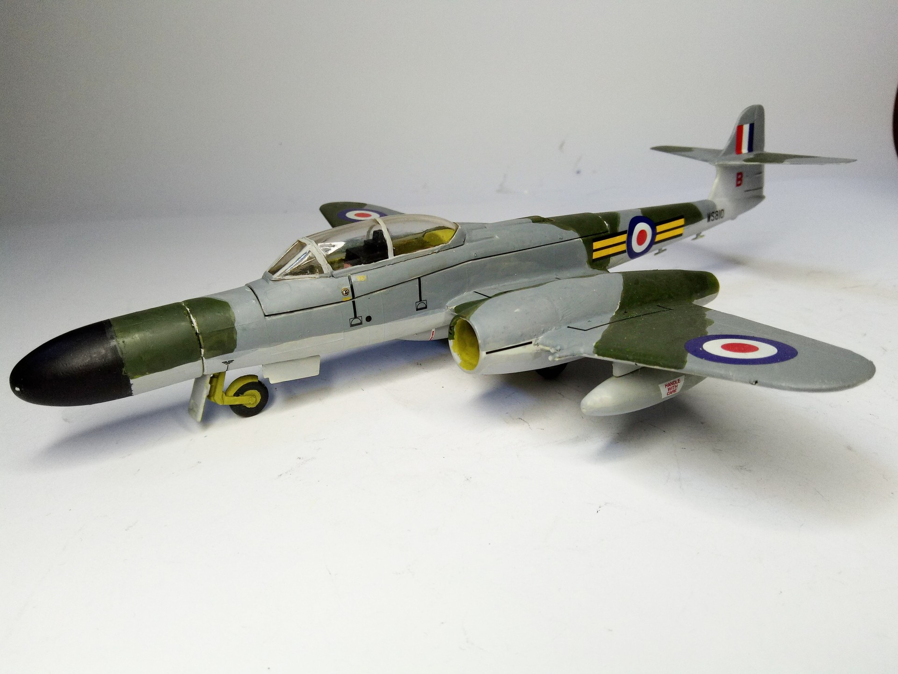
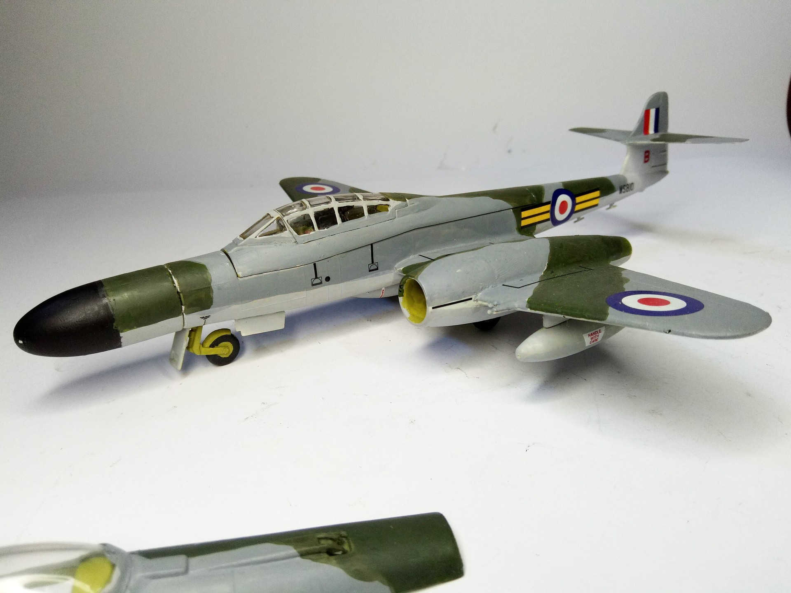
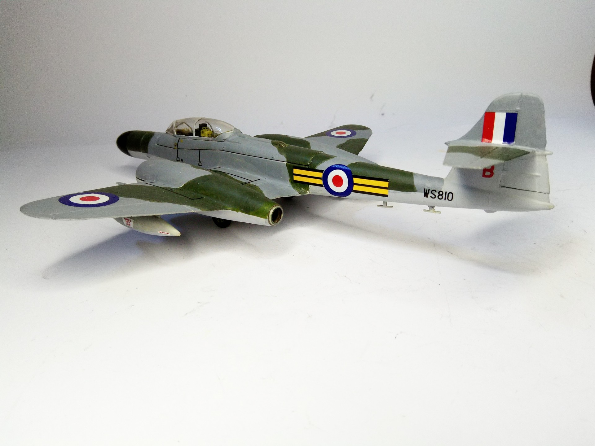

Aerei · scale model archive
Gloster Meteor NF 14
Gloster Meteor NF 14 — Kit: Matchbox, Scale: 1/72. 264 Sq Linton-on-Duse UK 1957 Beautiful kit with optional canopies and radomes #1/72 #Matchbox…

Photo gallery


English description
264 Sq Linton-on-Duse UK 1957
Beautiful kit with optional canopies and radomes
#1/72 #Matchbox #Gloster #Meteor
Descrizione italiana
264 Sqn, Linton-on-Ouse, Regno Unito, 1957. Bel kit con tettucci e radome opzionali.